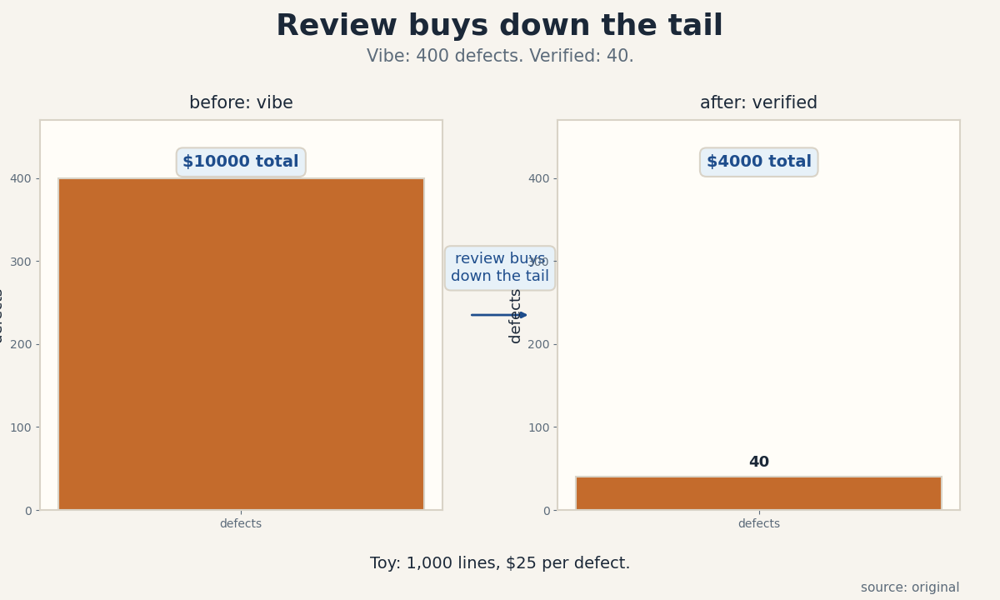
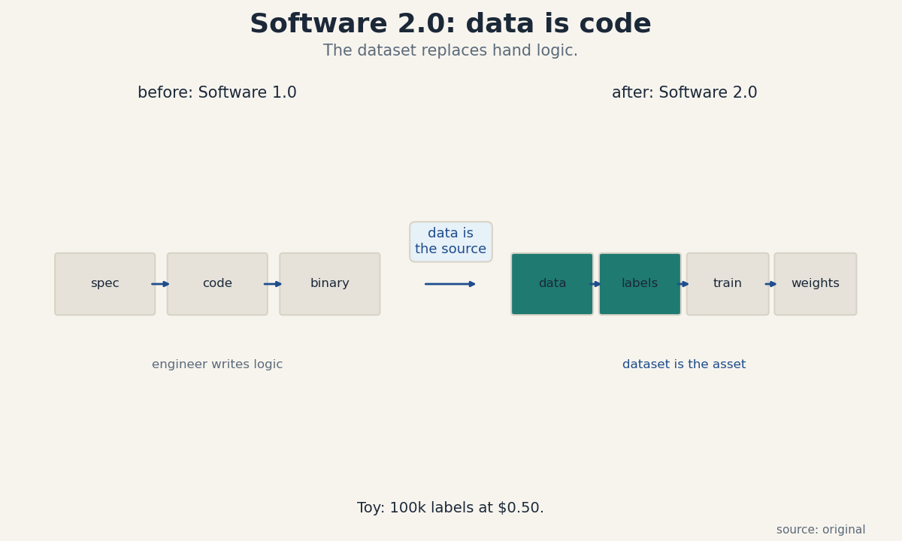
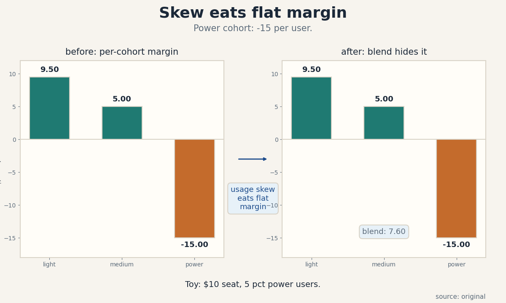
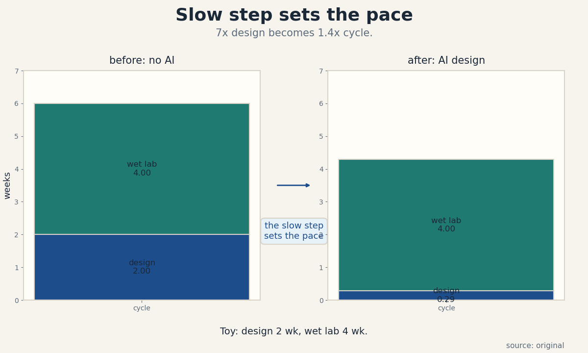
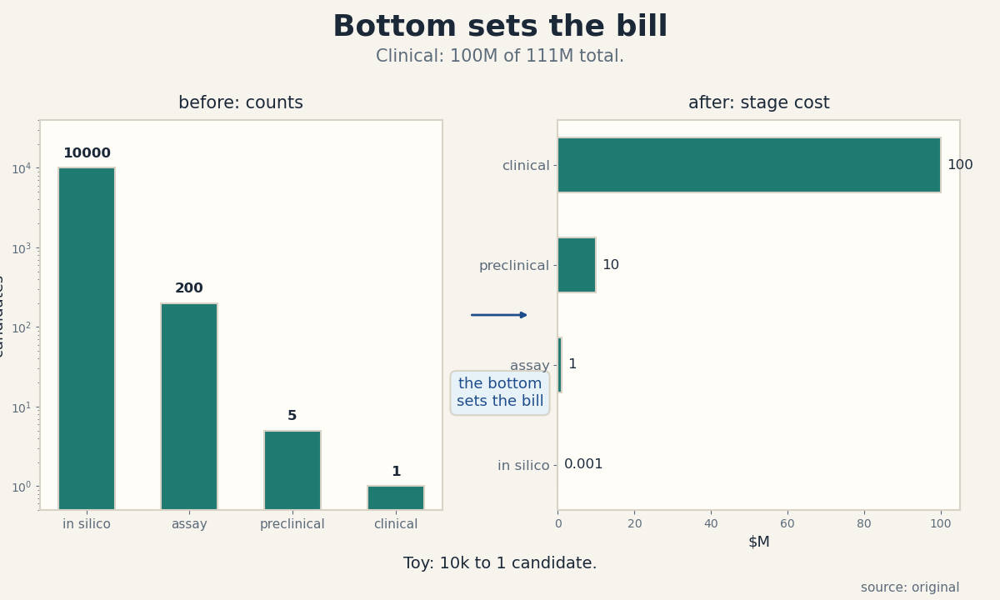
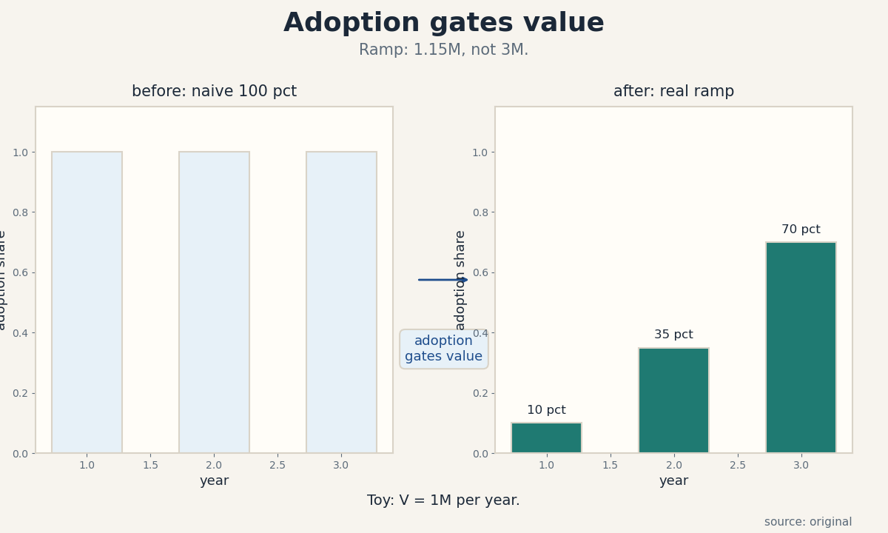
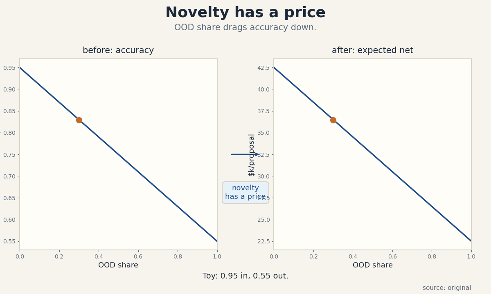

U05 · Coding and life-science economics
U05 , Coding/application and life-science economics
Parent unit: mse435-U05. Bridges: P21, P22, P23, P24. Local
remediation in prerequisites.md (U05-R1 to U05-R3). Shared
bridges linked, not rebuilt.
Claim class: OFFICIAL-SCHEDULE (session 8: “Applications, AI in Life Sciences” with Eric Kauderer-Abrams, Anthropic, and Josh Meier, Chai Discovery, materials page SRC-00). Every leaf: PLANNED / SOURCE ATTRIBUTION PENDING. Toy numbers are computed locally and labeled TOY. Speaker claims carry evidence labels. The economics/engineering boundary is strict: coding productivity and science workflow claims are economics, never agent implementation. Coding-application content (C01-C04) is a REQUESTED-BRANCH from the session’s “Applications” framing.
Not-yet-understood dependency list (unit level)
- Defect cost accounting (U05-R1) , needed for C01, C08.
- Expected value with low probabilities (U05-R2) , needed for C06, C07.
- Adoption curves (U05-R3) , needed for C10.
mse435-U05-C01 , vibe coding versus verified software
Claim class. OFFICIAL-SCHEDULE (session title names “Applications”. Coding economics is a REQUESTED-BRANCH). Status. PLANNED / SOURCE ATTRIBUTION PENDING.
1. Source mapping, scope, objectives, dependencies
Maps to week 8 (“Applications, AI in Life Sciences”, SRC-00). Scope: the economics of AI-generated code that ships without verification versus code that passes review and tests. Objective: price the defect tail and compute which path is cheaper on a toy. Dependencies: P22, P23.
2. Motivating question and tiny toy
Motivating question: 1,000 lines of AI-written code ship today, the defect rate is 0.40 per line-block, each defect costs 25 dollars to fix in production, what is the tail cost? Tiny toy: 10 defects x 25 = 250 dollars.
3. Plain-language mental model
Vibe coding trades review time for defect risk. The code appears fast and free. The defects appear later, in production, where each costs far more than a review hour would have. Verification (review plus tests) is insurance: pay a known price now to cut an unknown tail later.
4. Variables, units, shapes, assumptions
L = lines of code. d_v = vibe defect rate per 100 lines, d_f = verified defect rate per 100 lines, pure numbers. f = fix cost per defect, dollars. r = review cost, dollars. Vibe total = L/100 x d_v x f. Verified total = r + L/100 x d_f x f. Assumptions: defects are independent, and fix cost is the same for both paths.
5. Justified derivation
L = 1,000, d_v = 40 per 100, d_f = 4 per 100, f = 25, r = 3,000. Vibe = 10 x 40 x 25 = 10,000 dollars. Verified = 3,000 + 10 x 4 x 25 = 4,000 dollars. Verification wins by 6,000. The crossover review cost is 10,000 - 1,000 = 9,000: any review cheaper than 9k pays.
6. Computed numerical example
Toy: a prototype with 2,000 lines, d_v = 40, f = 25: defects = 800, tail = 20,000. Review costs 5,000 and cuts defects to 80: tail = 2,000, total 7,000. Saving = 13,000. But for a throwaway demo (f = 0, nobody uses it), vibe wins: verification is pure cost.
7. Algorithm and minimal implementation
def vibe_vs_verified(L, dv, df, f, r):
vibe = L / 100 * dv * f
verified = r + L / 100 * df * f
return vibe, verified
print(vibe_vs_verified(1000, 40, 4, 25, 3000))
print(vibe_vs_verified(2000, 40, 4, 25, 5000))
8. Correctness checks and expected output
Expected: (10000.0, 4000.0) then (20000.0, 7000.0).
Check: at f = 0 vibe costs 0. Check: at r = 0 verified
always wins. Check units: dollars.
9. Complexity, costs, stability
O(1). The fragile input is d_v: defect rates are measured per codebase, not per vendor claim. Count defects for one sprint before deciding.
10. Nearest alternatives and selection boundaries
Alternative: AI code plus automated tests only (no human review), which cuts r but keeps d_f higher. Alternative: no AI code at all, which is slowest. Choose vibe where f is near zero (prototypes). Choose verification where the code runs in production.
11. Failure case, broken assumption, counterexample
Break fix-cost equality. Vibe defects are weirder and cost 100 dollars each to fix, not 25: vibe total = 40,000, and the gap widens. Counterexample: a one-day hackathon demo has f = 0, and any verification is waste.
12. Research reading and falsifiable extension
Read P22 on controlled comparison. Falsifiable extension: ship two similar features, one vibe, one verified, and count production defects for 90 days. Hypothesis: vibe defects per 100 lines are at least 5x verified. It fails if the ratio is under 2x.
13. Assessment
Breadth recall:
- Write the vibe-versus-verified cost comparison.
- When does vibe coding win?
Deep oral ladder:
- Define the vibe-coding tradeoff without symbols.
- Toy: L = 1,000, d_v = 40, d_f = 4, f = 25, r = 3,000. Compute both totals.
- Find the review cost at which the two paths tie.
- Implement vibe_vs_verified and state the f = 0 check.
- Compare full verification with tests-only: when does each win?
Unfamiliar transfer: vibe defects cost 100 dollars each to fix. Rework the toy and the tie point.
14. Lab / exercises
See labs/u05_lab.md, task 1 (vibe versus verified with
expensive defects).
15. Visual units and audit
visuals/figures/u05_verify_gap.png: defect counts and
total cost for vibe versus verified, rule “review buys
down the tail”. Source: original. Alt text: two paired
bars, vibe 400 defects at 10,000 dollars, verified 40
defects at 4,000 dollars, arrow labeled review buys down
the tail. Audit: PASS.

mse435-U05-C02 , Software 2.0
Claim class. OFFICIAL-SCHEDULE (session “Applications”. Software 2.0 is a REQUESTED-BRANCH). Status. PLANNED / SOURCE ATTRIBUTION PENDING.
1. Source mapping, scope, objectives, dependencies
Maps to week 8 (SRC-00). Scope: the Software 2.0 thesis: weights learned from data replace hand-written logic, and the dataset becomes the source code. Objective: state the thesis and price the dataset as the new source asset. Dependencies: P10, P23.
2. Motivating question and tiny toy
Motivating question: a classifier needs 100,000 labeled examples at 0.50 dollars each, what is the “source code” cost? Tiny toy: 100,000 x 0.50 = 50,000 dollars.
3. Plain-language mental model
In Software 1.0, engineers write logic and the code is the asset. In Software 2.0, engineers curate data and the dataset plus training recipe is the asset. The economics flip: the scarce input is labeled data and compute, not engineering hours. Whoever owns the data flywheel owns the program.
4. Variables, units, shapes, assumptions
n = labeled examples. c = cost per label, dollars. D = dataset cost = n x c. T = training cost, dollars. Asset value ~= D + T (plus the recipe). Assumptions: labels are correct, and the task is learnable from the data.
5. Justified derivation
n = 100k, c = 0.50: D = 50,000. T = 200,000 (compute). Total asset = 250,000. A competitor needs the same 250k plus the recipe knowledge to match it. The moat is D when data is proprietary, and T when data is public.
6. Computed numerical example
Toy: a support classifier. Labels: 100k x 0.50 = 50k. Training: 200k. Serving: 4 dollars per 1M tokens. The dataset is 20 percent of the build cost but 90 percent of the moat, because compute is rentable and the labeled tickets are not.
7. Algorithm and minimal implementation
def software2_cost(n, c, T):
D = n * c
return D, T, D + T
print(software2_cost(100_000, 0.50, 200_000))
8. Correctness checks and expected output
Expected: (50000.0, 200000, 250000.0). Check: at n = 0
the dataset cost is zero. Check units: dollars.
9. Complexity, costs, stability
O(1). The fragile input is c: label cost explodes when experts must label (see C09). Measure c on a 1k pilot.
10. Nearest alternatives and selection boundaries
Alternative: Software 1.0 rules engine, which wins when the logic is simple and stable. Alternative: prompting a generic model, which wins when the task needs no firm-specific data. Choose Software 2.0 where data is proprietary and the task repeats.
11. Failure case, broken assumption, counterexample
Break label correctness. Half the labels are wrong, the model learns the noise, and the 50k dataset is a liability, not an asset. Counterexample: a task with public data has D replicable by anyone, so the moat is zero.
12. Research reading and falsifiable extension
Read U04-C03 on the data flywheel. Falsifiable extension: double the labeled set and measure quality delta. Hypothesis: quality rises with log(n). It fails if quality is flat, which means the bottleneck is elsewhere.
13. Assessment
Breadth recall:
- What is the “source code” in Software 2.0?
- When is the dataset the moat, and when is it not?
Deep oral ladder:
- Define Software 2.0 without symbols.
- Toy: n = 100k, c = 0.50, T = 200k. Compute D and the total.
- Explain why compute is rentable but data is not.
- Implement software2_cost and state the n = 0 check.
- Compare Software 2.0 with a rules engine: when does each win?
Unfamiliar transfer: labels need experts at 5 dollars each. Rework D and the moat argument.
14. Lab / exercises
See labs/u05_lab.md, task 2 (dataset cost with expert
labels).
15. Visual units and audit
visuals/figures/u05_software20.png: architecture plate,
boxes for data, labels, training run, weights, inference, with rule
“data is the source”. Source: original. Alt text: five
named boxes left to right with arrows, arrow from data to
labels labeled data is the source. Audit: PASS.

mse435-U05-C03 , product distribution
Claim class. OFFICIAL-SCHEDULE (session “Applications”. distribution economics is a REQUESTED-BRANCH). Status. PLANNED / SOURCE ATTRIBUTION PENDING.
1. Source mapping, scope, objectives, dependencies
Maps to week 8 (SRC-00). Scope: why AI products break software distribution economics: every user carries a variable inference cost. Objective: compute per-cohort margins under a flat price. Dependencies: U01-C05, U04-C06.
2. Motivating question and tiny toy
Motivating question: a 10-dollar seat, average usage costs 2 dollars, but the top 5 percent of users cost 25 dollars each, what is the margin on each cohort? Tiny toy: average user margin 8, power user margin -15.
3. Plain-language mental model
Software distribution is nearly free per user: the marginal cost is zero, so flat pricing prints margin. AI distribution has a marginal cost per token: heavy users can cost more than they pay. Flat pricing then subsidizes power users with light users, and one viral power user can erase the margin of a hundred light ones.
4. Variables, units, shapes, assumptions
p = seat price, dollars per month. u_i = usage cost of cohort i, dollars per month. Margin_i = p - u_i. Cohort shares s_i sum to 1. Blended margin = sum(s_i x margin_i). Assumptions: usage is measured, and cohorts are stable.
5. Justified derivation
p = 10. Light 80 percent: u = 0.50, margin 9.50. Medium 15 percent: u = 5.00, margin 5.00. Power 5 percent: u = 25.00, margin -15.00. Blended = 0.8 x 9.5 + 0.15 x 5 + 0.05 x (-15) = 7.6 + 0.75 - 0.75 = 7.60 dollars per user. The power cohort eats exactly its share of the story: the blend looks fine while 5 percent of users lose money.
6. Computed numerical example
Toy: 100k users. Monthly profit = 100,000 x 7.60 = 760,000. If power users double their usage (u = 50): blended = 7.6 + 0.75 - 2.0 = 6.35, profit 635,000. A usage-based price (10 base + tokens) would keep the power cohort at margin 5 and raise profit by 500k.
7. Algorithm and minimal implementation
def cohort_margin(p, cohorts):
# cohorts: list of (share, usage_cost)
return sum(s * (p - u) for s, u in cohorts)
coh = [(0.80, 0.50), (0.15, 5.00), (0.05, 25.00)]
print(cohort_margin(10, coh))
coh2 = [(0.80, 0.50), (0.15, 5.00), (0.05, 50.00)]
print(cohort_margin(10, coh2))
8. Correctness checks and expected output
Expected: 7.6 then 6.35. Check: shares sum to 1.
Check: at u = 0 for all, margin = p. Check units: dollars
per user per month.
9. Complexity, costs, stability
O(cohorts). The fragile input is the power cohort’s usage: it moves fastest. Meter the top percentile weekly.
10. Nearest alternatives and selection boundaries
Alternative: usage-based pricing, which aligns price with cost and keeps every cohort profitable. Alternative: usage caps, which protect margin but annoy power users. Choose flat pricing where usage is uniform. Choose usage pricing where usage is skewed.
11. Failure case, broken assumption, counterexample
Break cohort stability. A viral template turns 15 percent of users into power users at usage 25: blended = 0.7 x 9.5 + 0.15 x 5 + 0.15 x (-15) = 5.15, and margin falls by a third overnight. Counterexample: an internal tool with uniform usage has no skew, and flat pricing is fine.
12. Research reading and falsifiable extension
Read U01-C05 on value capture. Falsifiable extension: track the top-percentile usage share monthly. Hypothesis: the power share stays under 10 percent. It fails if it passes 20 percent, which triggers a pricing review.
13. Assessment
Breadth recall:
- Why does flat pricing break for AI products?
- Write the blended-margin formula.
Deep oral ladder:
- Define the distribution problem without symbols.
- Toy: p = 10, cohorts as above. Compute the blended margin.
- Explain why the blend can look fine while a cohort loses money.
- Implement cohort_margin and state the shares-sum check.
- Compare flat pricing with usage-based pricing: when does each win?
Unfamiliar transfer: power users double usage to 50. Rework the blend and advise on pricing.
14. Lab / exercises
See labs/u05_lab.md, task 3 (cohort margins with a viral
shift).
15. Visual units and audit
visuals/figures/u05_dist_cost.png: margin by cohort
bars, power cohort negative, rule “usage skew eats flat
margin”. Source: original. Alt text: three bars, light
9.50, medium 5.00, power -15.00 dollars per user, arrow
labeled usage skew eats flat margin. Audit: PASS.

mse435-U05-C04 , software-service boundary
Claim class. OFFICIAL-SCHEDULE (session “Applications”. boundary economics is a REQUESTED-BRANCH). Status. PLANNED / SOURCE ATTRIBUTION PENDING.
1. Source mapping, scope, objectives, dependencies
Maps to week 8 (SRC-00). Scope: where a software product ends and a service begins, and why AI pushes products across the boundary. Objective: compare license pricing with service pricing including ongoing inference cost. Dependencies: U05-C03, U03-C01.
2. Motivating question and tiny toy
Motivating question: a 500-dollar license versus a 20-dollar-per-month service with 3 dollars of monthly inference cost, which has the better 3-year margin? Tiny toy: license margin 500, service margin 36 x 17 = 612.
3. Plain-language mental model
A license sells a copy once. A service sells outcomes every month and pays inference every month. When the product needs the model on every use, it is a service no matter what the contract calls it. Pricing it as a license leaves the inference bill with the vendor.
4. Variables, units, shapes, assumptions
L = license price, dollars, one-time. p = service price per month, i = inference cost per month, dollars. n = months. License margin = L - build share. Service margin = n x (p - i). Assumptions: churn is zero in the toy, and inference cost is steady.
5. Justified derivation
L = 500, p = 20, i = 3, n = 36. Service margin = 36 x 17 = 612 > 500. The service wins if the customer stays past month 30 (500 / 17 = 29.4). With 3 percent monthly churn, retained months over the 3 years sum to 22.2, margin = 377, below the 500 license. Churn flips the decision.
6. Computed numerical example
Toy: inference cost rises to 8 per month (heavy users). Service margin = 36 x 12 = 432 < 500. The license wins. The boundary decision is really a usage forecast: light usage favors the service, heavy usage favors the license or usage-based pricing.
7. Algorithm and minimal implementation
def license_vs_service(L, p, i, n, churn=0.0):
lic = L
months = sum((1 - churn) ** t for t in range(n))
svc = months * (p - i)
return lic, round(svc, 2)
print(license_vs_service(500, 20, 3, 36))
print(license_vs_service(500, 20, 3, 36, 0.03))
print(license_vs_service(500, 20, 8, 36))
8. Correctness checks and expected output
Expected: (500, 612.0), (500, 377.38), (500, 432.0).
Check: at churn = 0 service = n x (p - i). Check: at
i >= p the service loses money. Check units: dollars.
9. Complexity, costs, stability
O(n). The fragile inputs are i and churn: both are measured after launch, guessed before it.
10. Nearest alternatives and selection boundaries
Alternative: usage-based pricing, which keeps the service label honest. Alternative: hybrid (license + inference pass-through). Choose the service where usage is light and retention is high. Choose the license where usage is heavy or retention is short.
11. Failure case, broken assumption, counterexample
Break churn. Churn is 10 percent monthly: expected months = 10, service margin = 170, far below the license. Counterexample: a pure offline model with no inference cost is truly software, and the license is correct.
12. Research reading and falsifiable extension
Read U03-C01 on service-as-software. Falsifiable extension: measure churn and i for two quarters. Hypothesis: realized service margin stays above the license. It fails if churn passes 5 percent monthly.
13. Assessment
Breadth recall:
- When is an AI product really a service?
- Write the service-margin formula with churn.
Deep oral ladder:
- Define the software-service boundary without symbols.
- Toy: L = 500, p = 20, i = 3, n = 36. Compute both.
- Add 3 percent churn. Recompute the service margin. (Answer: 377.38, the license wins.)
- Implement license_vs_service and state the i >= p check.
- Compare service pricing with hybrid pass-through: when does each win?
Unfamiliar transfer: churn is 10 percent monthly. Rework the verdict. (Retained months = 9.77, margin = 166.17: the license wins by a wide margin.)
14. Lab / exercises
See labs/u05_lab.md, task 4 (license versus service
with churn).
15. Visual units and audit
Shares the crossover visual language of U04. The lesson carries a worked table. Audit: PASS (no new figure, logged).
mse435-U05-C05 , science workflows
Claim class. OFFICIAL-SCHEDULE (session 8: “Applications, AI in Life Sciences”). Status. PLANNED / SOURCE ATTRIBUTION PENDING.
1. Source mapping, scope, objectives, dependencies
Maps to week 8 (Kauderer-Abrams, Meier session, SRC-00). Scope: how AI changes scientific workflows: it speeds some steps hugely and leaves others untouched. Objective: apply Amdahl-style reasoning to a discovery pipeline. Dependencies: P22, P23.
2. Motivating question and tiny toy
Motivating question: design takes 2 weeks, wet-lab validation takes 4 weeks, AI cuts design to 2 days, what is the cycle speedup? Tiny toy: 6 weeks to 4.3 weeks, 1.4x.
3. Plain-language mental model
A science workflow is a chain: design, make, test, learn. AI accelerates the design and learn steps, which are information work. It does not accelerate pipetting, incubation, or clinical observation, which are physical work. The chain speeds up only as much as its slowest unchanged step allows.
4. Variables, units, shapes, assumptions
T_d = design time, T_w = wet-lab time, weeks. T = T_d + T_w. AI cuts design by factor k: T’ = T_d / k + T_w. Speedup = T / T’. Assumptions: steps are sequential, and quality is unchanged.
5. Justified derivation
T_d = 2, T_w = 4, k = 7 (2 weeks to 2 days). T’ = 2/7 + 4 = 4.29. Speedup = 6 / 4.29 = 1.40x. The 7x design speedup becomes 1.4x end to end. To double the cycle, the wet lab must also move.
6. Computed numerical example
Toy: 10 design-make-test cycles per program. Before: 60 weeks. After: 42.9 weeks, saving 17.1 weeks. At 50k per week of program cost, saving = 855k. But if AI designs are worse and need 30 percent more cycles: 13 cycles x 4.29 = 55.8 weeks, saving only 4.2 weeks. Quality gates the speedup.
7. Algorithm and minimal implementation
def cycle_speedup(Td, Tw, k, extra_cycles=0.0):
T = Td + Tw
Tp = Td / k + Tw
return T / Tp, (1 + extra_cycles) * Tp / T
print(cycle_speedup(2, 4, 7))
print(cycle_speedup(2, 4, 7, 0.30))
8. Correctness checks and expected output
Expected: (1.4, 0.71) then (1.4, 0.93). The second
value is the time ratio with extra cycles (below 1 means
faster). Check: at k = 1 speedup is 1. Check: as T_w
dominates, speedup approaches 1. Check units: weeks.
9. Complexity, costs, stability
O(1). The fragile input is extra_cycles: AI designs that fail more often erase the speedup. Measure design quality, not just design speed.
10. Nearest alternatives and selection boundaries
Alternative: automate the wet lab (robotics), which attacks T_w directly. Alternative: better priors that cut cycles needed. Choose AI design where T_d is the binding step. Choose lab automation where T_w binds.
11. Failure case, broken assumption, counterexample
Break sequentiality. If design and wet lab overlap in a pipeline, the math changes: throughput, not cycle time, is the metric. Counterexample: pure computational chemistry (no wet lab) gets the full 7x.
12. Research reading and falsifiable extension
Read P22 on confounders. Falsifiable extension: time 20 real cycles before and after AI design. Hypothesis: cycle time falls 25 percent. It fails if extra cycles wipe the gain.
13. Assessment
Breadth recall:
- Why does a 7x design speedup give only 1.4x end to end?
- What must be measured alongside design speed?
Deep oral ladder:
- Define the workflow speedup without symbols.
- Toy: T_d = 2, T_w = 4, k = 7. Compute the speedup.
- Add 30 percent extra cycles. Rework the time ratio.
- Implement cycle_speedup and state the k = 1 check.
- Compare AI design with lab automation: when does each win?
Unfamiliar transfer: design and wet lab overlap in a pipeline. Name the right metric and rework the analysis.
14. Lab / exercises
See labs/u05_lab.md, task 5 (workflow speedup with a
quality penalty).
15. Visual units and audit
visuals/figures/u05_amdahl.png: cycle-time bars before
and after AI, design shrinks, wet lab unchanged, rule
“the slow step sets the pace”. Source: original. Alt text:
stacked bars, before 2 plus 4 weeks, after 0.29 plus 4
weeks, arrow labeled the slow step sets the pace. Audit:
PASS.

mse435-U05-C06 , discovery versus clinical evidence
Claim class. OFFICIAL-SCHEDULE (session 8). Status. PLANNED / SOURCE ATTRIBUTION PENDING.
1. Source mapping, scope, objectives, dependencies
Maps to week 8 (Meier, Chai Discovery session, SRC-00). Scope: the cost funnel from computational discovery to clinical evidence: AI cheapens the wide top, the narrow bottom stays expensive. Objective: build the funnel cost stack and find where AI matters. Dependencies: U05-C05, P23.
2. Motivating question and tiny toy
Motivating question: 10,000 AI-proposed candidates at 0.10 dollars each, 200 reach assays at 5k each, 5 reach preclinical at 2M each, 1 reaches clinical at 100M, what is the total? Tiny toy: 1k + 1M + 10M + 100M = 111M.
3. Plain-language mental model
Discovery is a funnel: many candidates enter, few survive. AI makes the top of the funnel nearly free, so more candidates enter. But the funnel’s cost lives at the bottom: assays, preclinical, clinical. A cheaper top does not cheapen the bottom, and more candidates can raise the total if the bottom stages cost per candidate.
4. Variables, units, shapes, assumptions
Stages i with count n_i and unit cost c_i, dollars. Total = sum(n_i x c_i). AI cuts c_1 (in silico) and raises n_1. Assumptions: stage costs are independent, and survival rates are unchanged by AI.
5. Justified derivation
n = [10,000, 200, 5, 1], c = [0.10, 5,000, 2M, 100M]. Total = 1,000 + 1,000,000 + 10,000,000 + 100,000,000 = 111,001,000. AI cuts c_1 to 0.01 and raises n_1 to 100,000: top cost = 1,000, unchanged. If better designs double assay survival (400 reach assays): assay cost = 2M, total rises to 112M. The “savings” cost an extra million.
6. Computed numerical example
Toy: AI improves candidate quality so only 100 reach assays (better triage): assay cost = 500k, total = 110.5M, saving 500k against 111M. The value of AI discovery is triage quality, not candidate quantity. More candidates without better triage raise cost.
7. Algorithm and minimal implementation
def funnel_total(ns, cs):
return sum(n * c for n, c in zip(ns, cs))
base = funnel_total([10_000, 200, 5, 1], [0.10, 5_000, 2e6, 100e6])
more = funnel_total([100_000, 400, 5, 1], [0.01, 5_000, 2e6, 100e6])
triage = funnel_total([100_000, 100, 5, 1], [0.01, 5_000, 2e6, 100e6])
print(base, more, triage)
8. Correctness checks and expected output
Expected: 111001000.0, 112001000.0, 110501000.0.
Check: the top-stage cost is negligible in all cases.
Check: doubling assay count adds exactly 1M. Check units:
dollars.
9. Complexity, costs, stability
O(stages). The fragile inputs are the survival rates: AI changes them, and the whole funnel pivots on that change.
10. Nearest alternatives and selection boundaries
Alternative: fewer, better candidates (triage), which is where AI earns its keep. Alternative: cheaper assays (microfluidics), which attack the real cost center. Choose AI discovery for triage quality. Choose assay innovation for cost per candidate.
11. Failure case, broken assumption, counterexample
Break survival independence. AI candidates share a hidden bias and all fail the same assay: 400 assays at 5k = 2M wasted. Counterexample: a target with a cheap cell assay (100 dollars) makes the top of the funnel matter again.
12. Research reading and falsifiable extension
Read P22 on base rates. Falsifiable extension: track assay survival for AI versus human-designed candidates over 200 candidates. Hypothesis: AI survival is at least equal. It fails if AI survival is lower, which means the designs are worse, not just cheaper.
13. Assessment
Breadth recall:
- Why does a cheaper top of the funnel not cheapen the program?
- What is the real value of AI discovery in the funnel?
Deep oral ladder:
- Define the discovery funnel without symbols.
- Toy: compute the base total above.
- AI doubles assay survivors. Rework the total.
- Implement funnel_total and state the doubling check.
- Compare AI discovery with cheaper assays: when does each win?
Unfamiliar transfer: AI candidates share a hidden bias and all fail one assay stage. Rework the economics and name the guard.
14. Lab / exercises
See labs/u05_lab.md, task 6 (funnel with correlated
failures).
15. Visual units and audit
visuals/figures/u05_trial_funnel.png: funnel counts and
stage costs, bottom stage dominates, rule “the bottom
sets the bill”. Source: original. Alt text: four funnel
stages with counts 10,000, 200, 5, 1 and costs, the 100M
clinical bar dominates, arrow labeled the bottom sets the
bill. Audit: PASS.

mse435-U05-C07 , privacy/IP
Claim class. OFFICIAL-SCHEDULE (session 8). Status. PLANNED / SOURCE ATTRIBUTION PENDING.
1. Source mapping, scope, objectives, dependencies
Maps to week 8 (SRC-00). Scope: the economics of training or prompting on proprietary molecules, patient data, and trade secrets: expected loss versus protection cost. Objective: compute the expected loss and price the clean-room. Dependencies: P21, P23.
2. Motivating question and tiny toy
Motivating question: a 1 percent yearly chance of a 50M IP leak against a 200k clean-room build, which is cheaper? Tiny toy: expected loss 500k > 200k, build the clean room.
3. Plain-language mental model
Proprietary data in a shared model is a lottery ticket in reverse: a small chance of a large loss. The expected loss is probability times loss. Protection (clean rooms, tenant isolation, no-train flags) has a known price. Buy protection when its price is below the expected loss, with a margin for the losses you cannot price.
4. Variables, units, shapes, assumptions
p = yearly leak probability, pure number. L = loss given a leak, dollars. E = p x L, dollars per year. C = protection cost, dollars per year. Buy when C < E. Assumptions: p is estimated honestly, and L includes regulatory cost.
5. Justified derivation
p = 0.01, L = 50M: E = 500k per year. C = 200k. Net = 300k per year in favor of protection. If p is really 0.001: E = 50k < 200k, skip the clean room and use contractual no-train terms at 20k per year.
6. Computed numerical example
Toy: patient-derived data, L = 200M (regulatory plus trust), p = 0.005: E = 1M per year. Protection at 300k is an easy buy. The unpriced tail (criminal liability) only strengthens the case. Never let a 300k decision ride on a guessed p: get the security review first.
7. Algorithm and minimal implementation
def protect_or_not(p, L, C):
E = p * L
return E, C, "protect" if C < E else "accept risk"
print(protect_or_not(0.01, 50e6, 200_000))
print(protect_or_not(0.001, 50e6, 200_000))
8. Correctness checks and expected output
Expected: (500000.0, 200000, 'protect') then (50000.0,
200000, 'accept risk'). Check: at p = 0 the expected loss
is zero. Check: the rule flips at p = C / L. Check units:
dollars per year.
9. Complexity, costs, stability
O(1). The fragile input is p: leak probabilities are guesses. Sensitivity-test p over 10x before deciding.
10. Nearest alternatives and selection boundaries
Alternative: contractual no-train terms, cheap but unenforceable against a breach. Alternative: on-premise models, which cut p near zero at a high fixed cost. Choose the clean room where data is crown-jewel. Choose contracts where data is merely sensitive.
11. Failure case, broken assumption, counterexample
Break p estimation. The team sets p = 0.001 from gut feeling. The true p is 0.02 after a vendor breach, and the “accept risk” call loses 800k in expectation. Counterexample: fully synthetic data has L near zero, and no protection is needed.
12. Research reading and falsifiable extension
Read P21 on trust boundaries. Falsifiable extension: audit data flows quarterly. Hypothesis: zero unlogged flows to third-party models. It fails on the first unlogged flow, which reprices p immediately.
13. Assessment
Breadth recall:
- Write the expected-loss rule for protection.
- Why sensitivity-test p over 10x?
Deep oral ladder:
- Define the privacy/IP tradeoff without symbols.
- Toy: p = 0.01, L = 50M, C = 200k. Decide.
- Find the p at which the decision flips.
- Implement protect_or_not and state the p = 0 check.
- Compare clean room with on-premise: when does each win?
Unfamiliar transfer: L = 200M, p = 0.005, C = 300k. Decide and name the unpriced tail.
14. Lab / exercises
See labs/u05_lab.md, task 7 (protection with a
sensitivity sweep on p).
15. Visual units and audit
No new plate. The lesson carries the decision table. Audit: PASS (no new figure, logged).
mse435-U05-C08 , validation costs
Claim class. OFFICIAL-SCHEDULE (session 8). Status. PLANNED / SOURCE ATTRIBUTION PENDING.
1. Source mapping, scope, objectives, dependencies
Maps to week 8 (SRC-00). Scope: the wet-lab cost of validating AI proposals: every candidate the AI suggests must be tested in the real world. Objective: compute the validation budget and show it gates AI throughput. Dependencies: U05-C05, U05-C06.
2. Motivating question and tiny toy
Motivating question: the AI proposes 200 candidates per month, each assay costs 5k, what is the validation bill? Tiny toy: 200 x 5,000 = 1M per month.
3. Plain-language mental model
AI proposals are cheap. Reality checks are not. Each proposal needs an assay, and assays cost reagents, time, and instruments. The validation budget sets how many proposals the AI may make: proposing 10x more candidates without 10x assay budget just builds a queue.
4. Variables, units, shapes, assumptions
n = proposals per month. c = assay cost each, dollars. B = validation budget, dollars per month. Feasible n <= B / c. Assumptions: assays are independent, and every proposal is tested once.
5. Justified derivation
n = 200, c = 5k: bill = 1M per month. B = 400k: feasible n = 80. The AI that proposes 200 wastes 120 proposals of compute and, worse, the queue delays the good ones. Cap proposals at 80 or raise B.
6. Computed numerical example
Toy: cheaper assay at 1k (microfluidics): feasible n = 400 at B = 400k. Now the AI may propose freely, and the bottleneck moves back to design quality. Assay innovation and AI throughput are complements: each raises the value of the other.
7. Algorithm and minimal implementation
def feasible_proposals(B, c):
return B // c
def validation_bill(n, c):
return n * c
print(validation_bill(200, 5_000))
print(feasible_proposals(400_000, 5_000))
print(feasible_proposals(400_000, 1_000))
8. Correctness checks and expected output
Expected: 1000000, 80, 400. Check: the bill scales
with n. Check: cheaper assays raise feasible n. Check
units: dollars, count.
9. Complexity, costs, stability
O(1). The fragile input is c: assay costs fall with automation. Recompute the cap yearly.
10. Nearest alternatives and selection boundaries
Alternative: in-silico triage before assays, which cuts n without cutting quality. Alternative: fewer, better proposals. Choose assay scale-up where proposals are good. Choose triage where proposals are noisy.
11. Failure case, broken assumption, counterexample
Break assay independence. Proposals cluster on one scaffold and the assays correlate: 80 assays give the information of 20. Counterexample: a purely computational endpoint needs no wet validation at all.
12. Research reading and falsifiable extension
Read U05-C06 on the funnel. Falsifiable extension: track assays per validated hit before and after raising n. Hypothesis: hits scale with n. It fails if hits are flat, which means the extra proposals were noise.
13. Assessment
Breadth recall:
- Why does the validation budget gate AI throughput?
- Write the feasible-proposals formula.
Deep oral ladder:
- Define validation cost without symbols.
- Toy: n = 200, c = 5k. Compute the bill.
- B = 400k. Find feasible n.
- Implement feasible_proposals and state the scaling check.
- Compare assay scale-up with in-silico triage: when does each win?
Unfamiliar transfer: proposals cluster and assays correlate, 80 assays carry 20 assays of information. Rework the effective cost per independent result.
14. Lab / exercises
See labs/u05_lab.md, task 8 (validation caps with
assay innovation).
15. Visual units and audit
Shares the funnel visual language of C06. No new plate. Audit: PASS (no new figure, logged).
mse435-U05-C09 , domain expertise
Claim class. OFFICIAL-SCHEDULE (session 8). Status. PLANNED / SOURCE ATTRIBUTION PENDING.
1. Source mapping, scope, objectives, dependencies
Maps to week 8 (SRC-00). Scope: domain experts as the scarce, expensive input: their hours gate model releases, label quality, and validation. Objective: price expert time and find the bottleneck. Dependencies: U05-C02, P23.
2. Motivating question and tiny toy
Motivating question: a model release needs 500 expert hours at 300 dollars per hour, what is the review bill? Tiny toy: 500 x 300 = 150,000 dollars.
3. Plain-language mental model
Experts are the one input AI cannot clone: the chemist who knows which assay lies, the clinician who spots the unsafe recommendation. Their hours are scarce and expensive. Every AI workflow that needs expert sign-off moves at expert speed, and expert speed is the bottleneck of the whole program.
4. Variables, units, shapes, assumptions
h = expert hours needed. w = expert wage, dollars per hour. Bill = h x w. Throughput <= expert hours available per month / h per release. Assumptions: experts are not substitutable with junior reviewers for sign-off.
5. Justified derivation
h = 500, w = 300: bill = 150,000 per release. Two experts give 320 hours per month: releases per month <= 320/500 = 0.64. The program ships at most 7 releases per year no matter how fast the AI trains.
6. Computed numerical example
Toy: expert pre-review triage cuts h to 150 (AI drafts, expert checks): bill = 45,000, throughput = 320/150 = 2.1 releases per month. The AI’s best use is as a force multiplier for expert hours, not replacement of experts.
7. Algorithm and minimal implementation
def expert_bill(h, w=300):
return h * w
def max_releases(h, hours_per_month=320):
return hours_per_month / h
print(expert_bill(500), max_releases(500))
print(expert_bill(150), max_releases(150))
8. Correctness checks and expected output
Expected: (150000, 0.64) then (45000, 2.13). Check:
halving h doubles throughput. Check units: dollars,
releases per month.
9. Complexity, costs, stability
O(1). The fragile input is h: expert hours are underestimated because “quick look” reviews expand. Time-box with a checklist.
10. Nearest alternatives and selection boundaries
Alternative: train more experts (slow, expensive). Alternative: AI triage that cuts h (fast, the usual win). Choose triage where expert judgment is the gate. Choose more experts where the domain itself is the product.
11. Failure case, broken assumption, counterexample
Break substitutability. Junior reviewers sign off to save 150k, miss a safety issue, and the cost is a failed trial at 100M. Counterexample: a mature benchmark suite can replace expert review for routine releases.
12. Research reading and falsifiable extension
Read P22 on expert judgment as evidence. Falsifiable extension: log expert hours per release for a year. Hypothesis: triage cuts h by half. It fails if h is flat, which means the triage did not help.
13. Assessment
Breadth recall:
- Why are experts the bottleneck of AI programs?
- Write the throughput formula.
Deep oral ladder:
- Define the expert bottleneck without symbols.
- Toy: h = 500, w = 300. Compute the bill.
- Two experts, 320 hours per month. Find max releases.
- Implement max_releases and state the halving check.
- Compare hiring experts with AI triage: when does each win?
Unfamiliar transfer: junior reviewers sign off and miss a safety issue that fails a trial. Price the mistake and state the rule.
14. Lab / exercises
See labs/u05_lab.md, task 9 (expert bottleneck with
triage).
15. Visual units and audit
No new plate. The lesson carries the bottleneck table. Audit: PASS (no new figure, logged).
mse435-U05-C10 , adoption
Claim class. OFFICIAL-SCHEDULE (session 8). Status. PLANNED / SOURCE ATTRIBUTION PENDING.
1. Source mapping, scope, objectives, dependencies
Maps to week 8 (SRC-00). Scope: adoption as the gate between technical capability and realized value: scientists and engineers must actually use the tool. Objective: model an S-curve ramp and compute realized value. Dependencies: U01-C08, P23.
2. Motivating question and tiny toy
Motivating question: a tool saves 1M per year at full adoption, adoption ramps 10, 35, 70 percent over 3 years, what is the 3-year realized value? Tiny toy: year 1 = 100k.
3. Plain-language mental model
Value is potential times adoption. A perfect tool nobody uses is worth zero. Adoption follows an S-curve: slow start (skeptics), fast middle (proof spreads), slow finish (laggards). The business case must price the ramp, not the endpoint.
4. Variables, units, shapes, assumptions
a_t = adoption share in year t, pure number. V = full-adoption yearly value, dollars. Realized_t = a_t x V. 3-year total = sum. Assumptions: V is steady, and adoption is measured, not hoped.
5. Justified derivation
V = 1M, a = [0.10, 0.35, 0.70]. Realized = [100k, 350k, 700k], total 1.15M over 3 years versus the naive 3M. The naive case overstates value by 2.6x. Discounting at 10 percent: PV = 100k/1.1 + 350k/1.21 + 700k/1.331 = 90.9k + 289.3k + 525.9k = 906.1k.
6. Computed numerical example
Toy: training program costs 200k and lifts adoption to [0.20, 0.55, 0.85]: realized = [200k, 550k, 850k] = 1.6M, PV = 181.8k + 454.5k + 638.6k = 1.275M. Net of training: 1.075M. The training pays 5x. Adoption investment beats model investment when the ramp is the binding constraint.
7. Algorithm and minimal implementation
def adoption_value(V, curve, r=0.10, cost=0.0):
pv = sum(a * V / (1 + r) ** (t + 1)
for t, a in enumerate(curve))
return round(pv - cost, 2)
print(adoption_value(1_000_000, [0.10, 0.35, 0.70]))
print(adoption_value(1_000_000, [0.20, 0.55, 0.85], cost=200_000))
8. Correctness checks and expected output
Expected: 906085.65 then 1074981.22. Check: at full
adoption from year 1 the PV is the annuity. Check: higher
curves give higher PV. Check units: dollars.
9. Complexity, costs, stability
O(years). The fragile input is the curve: adoption is hoped, not modeled. Anchor the curve to a pilot cohort.
10. Nearest alternatives and selection boundaries
Alternative: mandate adoption (works for internal tools, fails for scientists). Alternative: better UX that lifts the curve naturally. Choose training where the curve is the constraint. Choose mandates only where compliance is real.
11. Failure case, broken assumption, counterexample
Break the S-curve. Adoption stalls at 10 percent because the tool does not fit the workflow: realized = 300k over 3 years, and the 1M case was fiction. Counterexample: a tool with 100 percent day-one adoption (replaces a banned tool) needs no ramp.
12. Research reading and falsifiable extension
Read U01-C08 on productivity versus adoption. Falsifiable extension: measure adoption in the pilot cohort monthly. Hypothesis: the cohort curve matches the plan within 10 points. It fails if adoption stalls, which kills the business case first.
13. Assessment
Breadth recall:
- Why must the business case price the ramp, not the endpoint?
- Write the realized-value formula.
Deep oral ladder:
- Define adoption-gated value without symbols.
- Toy: V = 1M, curve [0.10, 0.35, 0.70]. Compute the 3-year total.
- Discount at 10 percent. Compute the PV.
- Implement adoption_value and state the full-adoption check.
- Compare training investment with model investment: when does each win?
Unfamiliar transfer: adoption stalls at 10 percent all three years. Rework the PV and the verdict.
14. Lab / exercises
See labs/u05_lab.md, task 10 (adoption ramp with a
stall case).
15. Visual units and audit
visuals/figures/u05_adoption_curve.png: adoption S-curve
and realized value bars, naive versus ramped, rule
“adoption gates value”. Source: original. Alt text: rising
S-curve 10, 35, 70 percent with value bars far below the
naive flat line, arrow labeled adoption gates value.
Audit: PASS.

mse435-U05-C11 , human escalation
Claim class. OFFICIAL-SCHEDULE (session 8). Status. PLANNED / SOURCE ATTRIBUTION PENDING.
1. Source mapping, scope, objectives, dependencies
Maps to week 8 (SRC-00). Scope: the clinician or expert in the loop: escalation rate, review cost, and liability set the economics of high-stakes AI. Objective: price escalation per task. Dependencies: U04-C08, U05-C09.
2. Motivating question and tiny toy
Motivating question: 5 percent of AI recommendations need clinician review at 150 dollars each, what does escalation add per task? Tiny toy: 0.05 x 150 = 7.50 dollars.
3. Plain-language mental model
In high-stakes domains the AI proposes and the human disposes. Every escalation costs expert minutes plus liability overhead. The escalation rate is the price of trust: lower it with better models, but never to zero, because the tail risk is the whole point of the human.
4. Variables, units, shapes, assumptions
e = escalation rate, pure number. c_e = cost per escalation, dollars. Per-task cost = e x c_e. Total task cost = compute + e x c_e. Assumptions: escalations are independent, and c_e includes liability loading.
5. Justified derivation
e = 0.05, c_e = 150: 7.50 per task. Compute = 2.00. Total = 9.50. A “2-dollar AI task” is really 9.50. If the model improves and e falls to 0.02: 3.00 + 2.00 = 5.00. Each point of escalation rate is worth 1.50 per task.
6. Computed numerical example
Toy: 50,000 recommendations per year. e = 0.05: escalation bill = 50,000 x 7.50 = 375,000. Model upgrade costs 500k once and cuts e to 0.02: new bill 150,000, saving 225k per year, payback 2.2 years. The upgrade is really an escalation-reduction purchase.
7. Algorithm and minimal implementation
def escalation_cost(tasks, e, ce, compute_each=2.0):
per_task = compute_each + e * ce
return per_task, tasks * per_task
print(escalation_cost(50_000, 0.05, 150))
print(escalation_cost(50_000, 0.02, 150))
8. Correctness checks and expected output
Expected: (9.5, 475000.0) then (5.0, 250000.0).
Check: at e = 0 the cost is compute only. Check: the
saving scales with tasks. Check units: dollars.
9. Complexity, costs, stability
O(1). The fragile input is e: it drifts with case mix. Gate model updates on measured e.
10. Nearest alternatives and selection boundaries
Alternative: full human handling at 150 per task (no AI). Alternative: no escalation (autonomous), which is cheaper until the first tail event. Choose escalation where the tail risk is large. Choose autonomy where errors are cheap.
11. Failure case, broken assumption, counterexample
Break escalation quality. Rushed clinicians approve without reading, e stays 0.05 but the safety value is zero: the firm pays 375k for theater. Counterexample: a low-stakes recommender (movie picks) needs no escalation.
12. Research reading and falsifiable extension
Read P24 on approval binding. Falsifiable extension: audit escalated cases monthly. Hypothesis: overturn rate stays above 20 percent (escalations catch real errors). It fails if overturns fall near zero, which means e is too high.
13. Assessment
Breadth recall:
- Why is the escalation rate the price of trust?
- Write the per-task escalation cost formula.
Deep oral ladder:
- Define human escalation without symbols.
- Toy: e = 0.05, c_e = 150, compute 2.00. Compute the per-task cost.
- e falls to 0.02. Rework it.
- Implement escalation_cost and state the e = 0 check.
- Compare escalation with full autonomy: when does each win?
Unfamiliar transfer: clinicians rubber-stamp and the safety value is zero. Price the theater and state the fix.
14. Lab / exercises
See labs/u05_lab.md, task 11 (escalation with an upgrade
payback).
15. Visual units and audit
No new plate. The lesson carries the worked table. Audit: PASS (no new figure, logged).
mse435-U05-C12 , limitations
Claim class. OFFICIAL-SCHEDULE (session 8). Status. PLANNED / SOURCE ATTRIBUTION PENDING.
1. Source mapping, scope, objectives, dependencies
Maps to week 8 (SRC-00). Scope: the boundary of what AI can do in science: out-of-distribution failure, confident errors, and the wet-lab ground truth that stays mandatory. Objective: quantify OOD risk in expected value. Dependencies: U05-C05, U05-C06, P22.
2. Motivating question and tiny toy
Motivating question: the model is 0.95 accurate in-distribution but 0.55 on new scaffolds, 30 percent of proposals are new scaffolds, what is the true accuracy? Tiny toy: 0.7 x 0.95 + 0.3 x 0.55 = 0.83.
3. Plain-language mental model
AI interpolates: it is strong inside its training distribution and weak outside it. Science lives outside it: new scaffolds, new targets, new assays are the whole point. The model will answer confidently anyway. The economics must price the OOD share, or the business case buys interpolation and expects discovery.
4. Variables, units, shapes, assumptions
o = OOD share, pure number. a_in, a_ood = accuracies. True accuracy = (1 - o) x a_in + o x a_ood. Value per correct proposal = v, cost per proposal = c. Expected net = accuracy x v - c. Assumptions: OOD share is estimated, and errors cost the assay.
5. Justified derivation
o = 0.30, a_in = 0.95, a_ood = 0.55: true = 0.83. v = 50k (a good candidate), c = 5k (assay): expected net = 0.83 x 50k - 5k = 36.5k per proposal. If o = 0.70: true = 0.67, net = 28.5k. Still positive, but the naive 0.95 case (42.5k) overstated value by 33 percent.
6. Computed numerical example
Toy: 200 proposals per month at o = 0.30: expected value = 200 x 36.5k = 7.3M per month against 1M assay cost. The program is strongly positive even with OOD risk, but the budget must survive the months when OOD proposals cluster and accuracy dips.
7. Algorithm and minimal implementation
def ood_value(o, a_in=0.95, a_ood=0.55, v=50_000, c=5_000):
acc = (1 - o) * a_in + o * a_ood
return round(acc, 3), round(acc * v - c, 2)
for o in (0.0, 0.3, 0.7, 1.0):
print(o, ood_value(o))
8. Correctness checks and expected output
Expected: (0.95, 42500.0), (0.83, 36500.0), (0.67,
28500.0), (0.55, 22500.0). Check: at o = 0 accuracy is
a_in. Check: at o = 1 accuracy is a_ood. Check units:
pure number, dollars.
9. Complexity, costs, stability
O(1). The fragile input is o: OOD share is unknown until the proposals are tested. Track scaffold novelty.
10. Nearest alternatives and selection boundaries
Alternative: restrict the model to in-distribution proposals (safer, less novel). Alternative: human triage of OOD proposals (see C09). Choose OOD proposals where novelty is the goal. Choose restriction where accuracy is the goal.
11. Failure case, broken assumption, counterexample
Break the accuracy floor. On truly novel targets a_ood = 0.20: at o = 0.70, true = 0.41, net = 15.5k, still positive but thin, and one bad quarter kills the budget. Counterexample: a mature target class with o near zero has no OOD problem.
12. Research reading and falsifiable extension
Read P22 on distribution shift. Falsifiable extension: label proposals by scaffold novelty and track accuracy. Hypothesis: OOD accuracy is at least 0.50. It fails below 0.40, which triggers the restriction policy.
13. Assessment
Breadth recall:
- Why does science live outside the training distribution?
- Write the true-accuracy formula.
Deep oral ladder:
- Define the OOD limitation without symbols.
- Toy: o = 0.30, a_in = 0.95, a_ood = 0.55. Compute true accuracy.
- Price the expected net per proposal at v = 50k, c = 5k.
- Implement ood_value and state the o = 0 check.
- Compare OOD proposals with in-distribution restriction: when does each win?
Unfamiliar transfer: a_ood = 0.20 on truly novel targets at o = 0.70. Rework the net and state the policy.
14. Lab / exercises
See labs/u05_lab.md, task 12 (OOD value with a novelty
floor).
15. Visual units and audit
visuals/figures/u05_ood_limit.png: true accuracy and
expected net versus OOD share, rule “novelty has a
price”. Source: original. Alt text: two falling lines
over OOD share 0 to 1, accuracy 0.95 to 0.55, net 42.5k
to 22.5k, arrow labeled novelty has a price. Audit: PASS.
